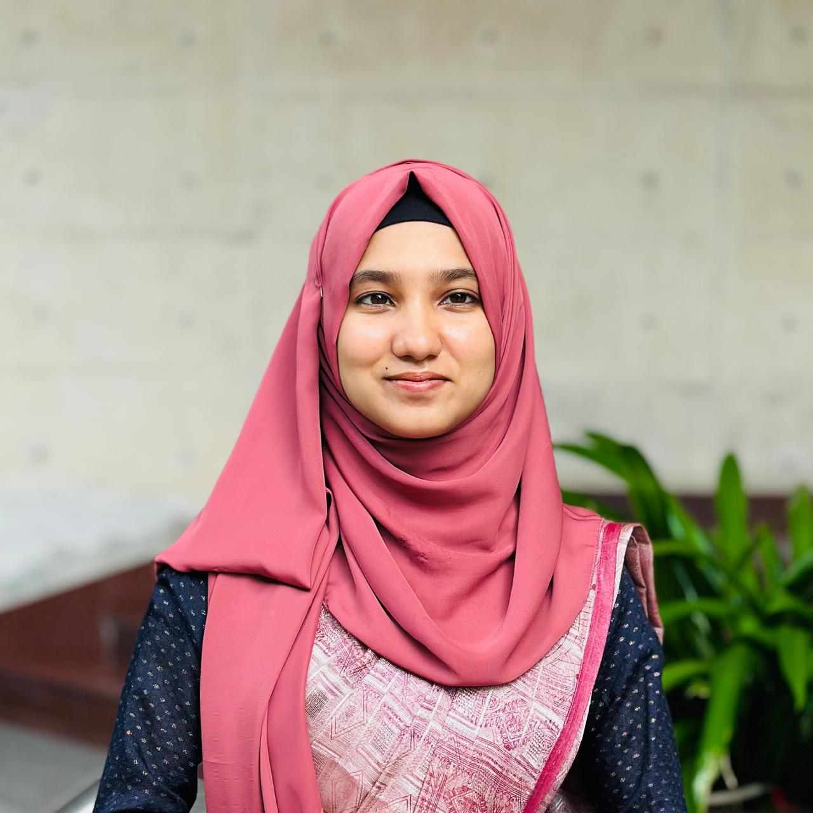
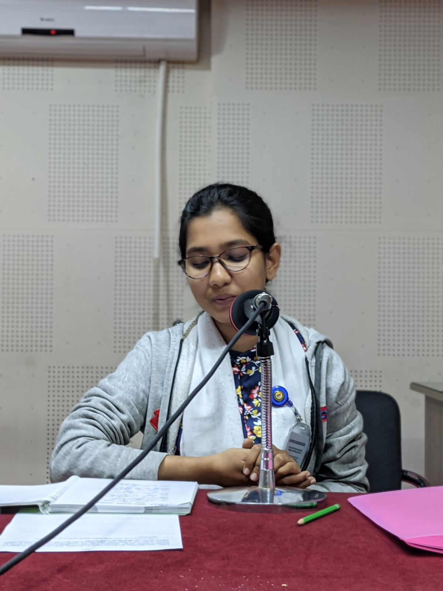
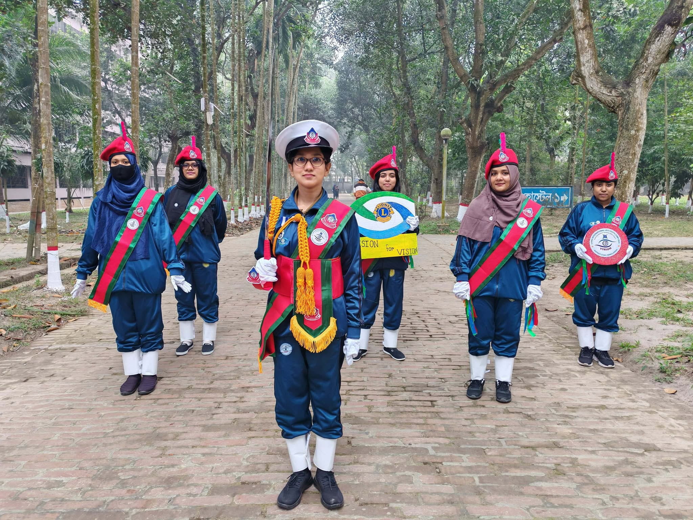
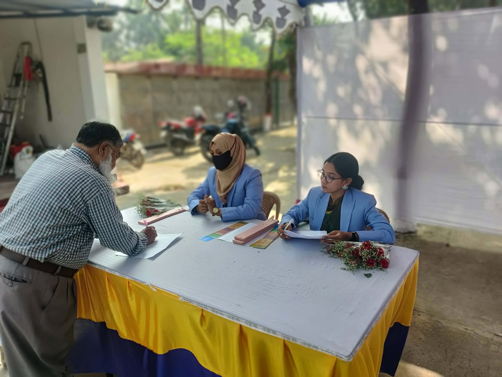
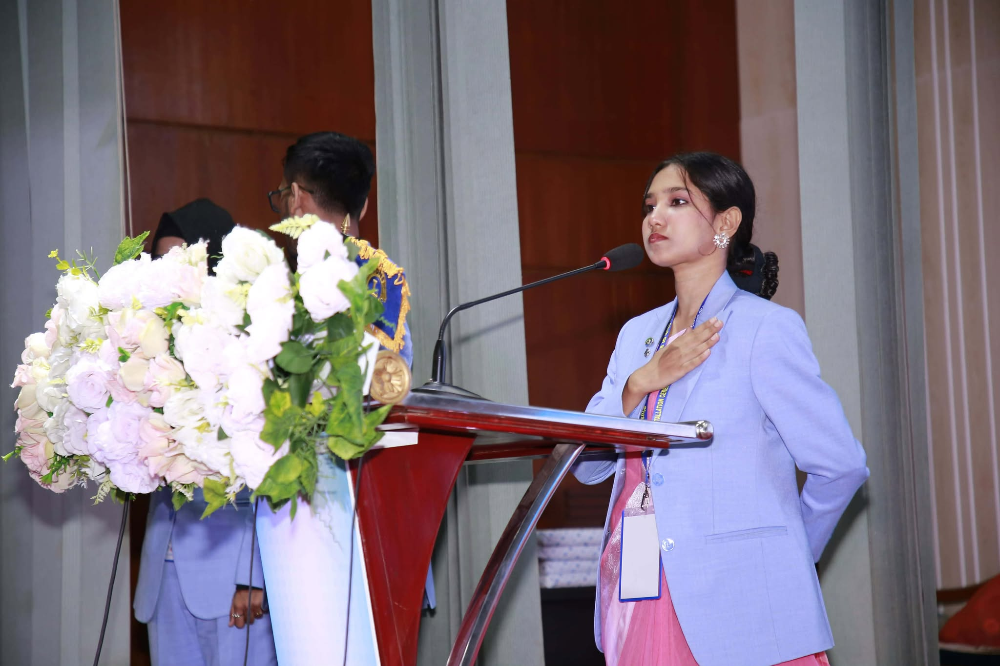

70+
Social Projects
Youth Leadership • Scholarship Readiness • Global Impact
A scholar in botany, a leader in service, and a globally engaged voice for youth empowerment.
Honors graduate from the University of Dhaka, Leo Club Vice President, and disciplined cadet leader delivering measurable results across ecology, civic engagement, education, health, and youth advancement.
Social Projects
Lives Touched
Leo Club Leadership
Honors in Botany




Maharun Nesa Mukti is a purpose-driven youth leader who unites academic rigor, social responsibility, and strategic public engagement. Her Honors in Botany from the University of Dhaka reflects a scientific foundation shaped by inquiry, discipline, and evidence-based thinking.
Across both college and university years, she served actively in the Bangladesh National Cadet Corps, where she strengthened resilience, duty, crisis-readiness, and team leadership under structured conditions.
As Vice President of the Leo Club of Eden College under Lions International youth initiatives, she has led collaborative service actions and youth platforms with measurable outcomes. Her profile is intentionally positioned for scholarships, international fellowships, and global development programs requiring credibility, consistency, and impact-oriented leadership.

Through Lions International youth service channels and Leo Club leadership, Maharun has contributed across 70+ youth-led initiatives, reaching over 15,000 people through inclusive, practical, and measurable interventions.
Food distribution programs, awareness campaigns, and volunteer mobilization for vulnerable communities.
Community-oriented health initiatives centered on prevention, dignity, and access to essential support.
Participation in eye-health service initiatives and advocacy linked to vision awareness and accessibility.
Student-focused encouragement, outreach, and youth-centered engagement to sustain learning continuity.
Leadership mentoring, event strategy, and structured opportunities for confidence and capability building.
Built discipline, structure, and public responsibility through BNCC training and service.
Advanced project management and community engagement as Leo Club Vice President.
Contributed to high-impact programs benefiting 15,000+ people directly and indirectly.
A focused portfolio of activity areas aligned with international scholarship standards, responsible leadership, and future-facing development priorities.
Committed to environmental stewardship through awareness initiatives, community responsibility, and support for clean and green technologies that advance sustainable living.
Actively engaged in NGO-linked projects, youth service actions, volunteering, and charity-based interventions—reinforced by disciplined cadet values and public-minded leadership.
Developing a strategic interest in commerce, startup culture, and business innovation across small and large-scale contexts, with emphasis on initiative, problem-solving, and execution.
Maharun brings national-level dance experience, collaborative work with Bangladesh Radio Betar, and confident anchoring across structured public events—bridging cultural intelligence with professional communication.
These domains strengthen a globally adaptable profile by combining cultural fluency, creative literacy, and cross-sector understanding relevant to modern leadership environments.
Engagement with high-value creative ecosystems that shape communication, innovation, and contemporary influence.
Strong orientation toward cultural exchange and creative expression as tools for inclusive dialogue and global collaboration.
Continuous exploration of visual and performing arts to strengthen aesthetic judgment, narrative impact, and audience connection.
Interest in narrative media and fashion as strategic fields for identity, storytelling, and cross-cultural representation.
Professional curiosity in event ecosystems where planning, stagecraft, experience design, and public engagement intersect.
A visual record of leadership, service, cultural participation, and public engagement.
Recognized for sustained contribution to youth-centered social initiatives with practical, measurable outcomes.
Demonstrated stage presence through anchoring, formal moderation, and structured public communication.
National-level dance background contributes to cultural representation, discipline, and audience connection.
Botany honors training from the University of Dhaka reinforces analytical thinking and responsible scholarship.
Built credibility through consistent teamwork, ethical conduct, and reliable execution in service environments.
Maharun Nesa Mukti offers a complete profile aligned with global scholarship, grant, and event-selection criteria.
Open to scholarship review, international youth forums, NGO partnerships, event invitations, and collaborative impact programs.